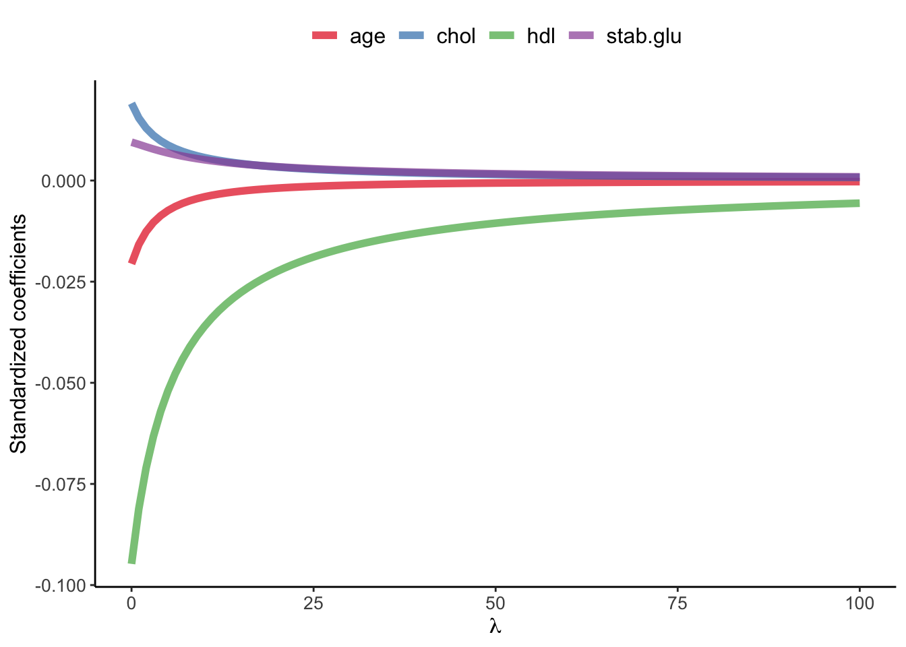
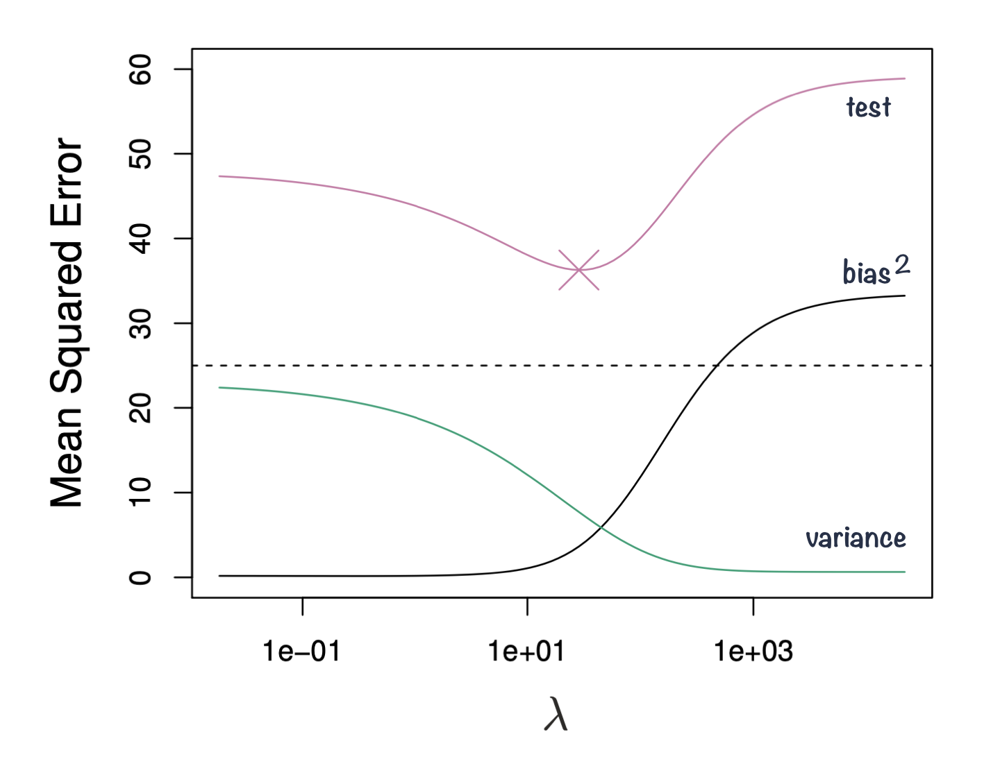
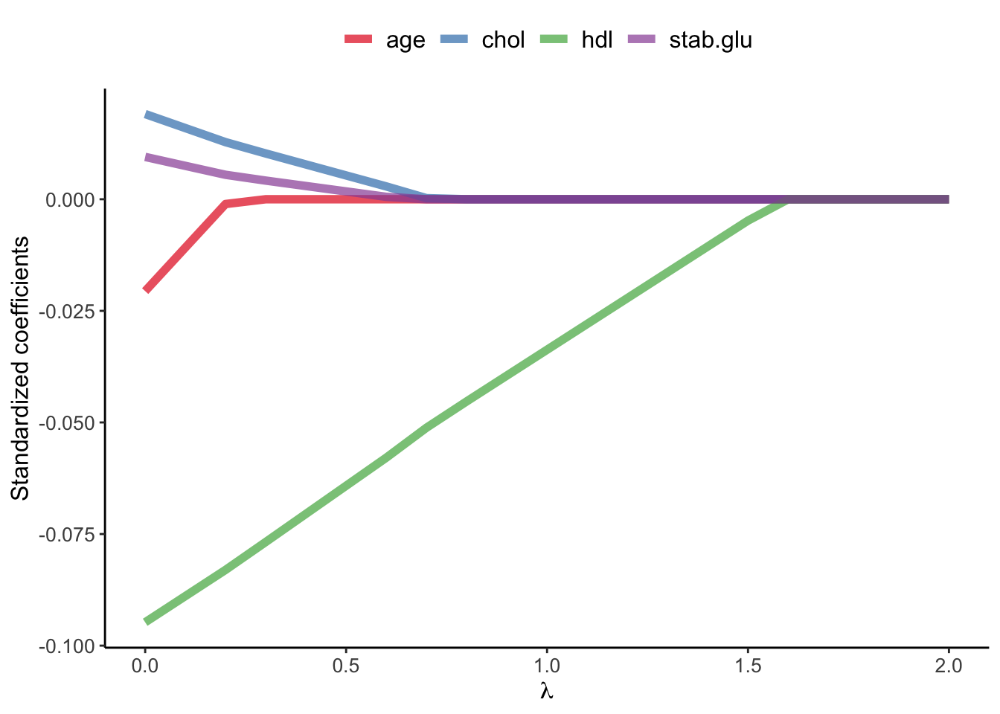
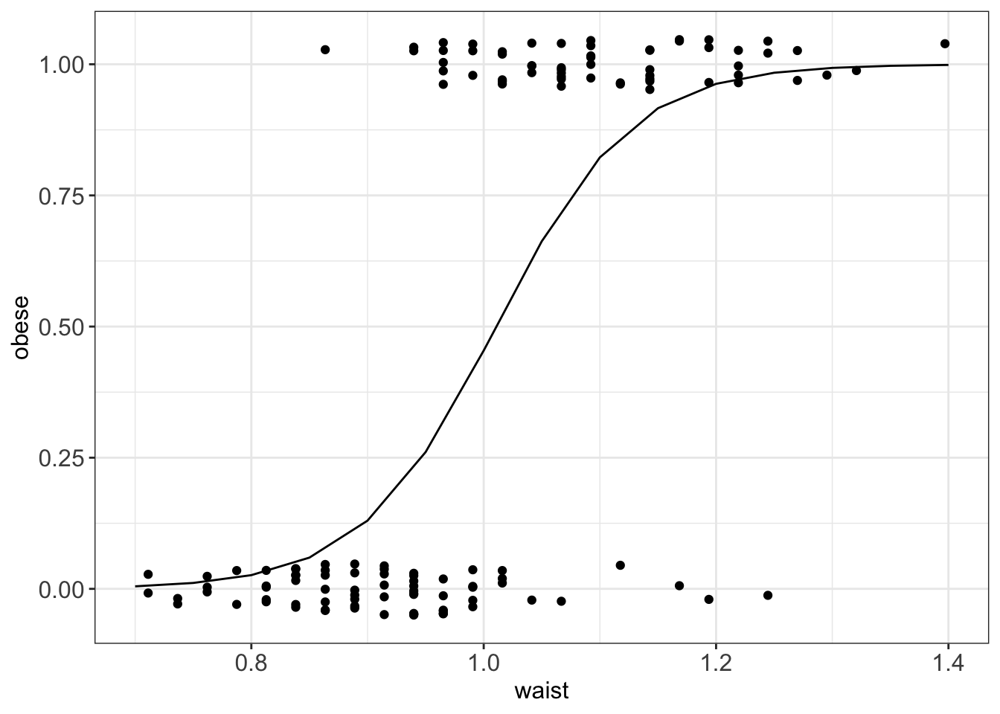
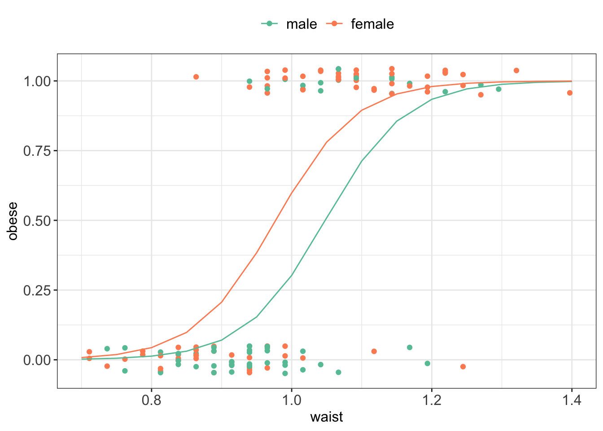

We can think of linear models in machine learning context, as linear models are often used for both building both regression and classification machine learning models and used for predictions It is often the case that some or many of the variables used in a multiple regression model are in fact not associated with the response, and there are feature selection approaches that enable us to exclude irrelevant variables and as a consequence improve prediction results.
Indeed, it is known that including irrelevant variables leads to unnecessary complexity in the resulting model, and often worse prediction results.
There are few approaches to perform feature selection or variable selection, that is for excluding irrelevant variables from a multiple regression model.
Here, we can group the feature selection methods by differences classes such as: subset selection, Shrinkage methods and dimension reduction. Another classification is by filter methods, wrapper methods and embedded methods.
Before we can divide more into these methods, we need to discuss how to evaluate regression results. We will need a way of comparing the models and evaluating the predictions outcomes.
2.2 Evaluating regression
Regression models can be evaluated by assessing a model fit, something that we have seen previously with adjusted \(R^2\). Other metrics than can also be expressed in terms of RSS include Akaike information criterion (AIC) and Bayesian information criterion (BIC).
Alternatively, by using data splitting strategies such as validation and cross-validation we can directly evaluate the prediction error. Here, we use metrics such as Mean Squared Error (MSE), Root Mean Squared Error (RMSE), Mean Absolute Error (MAE) or Mean Absolute Percentage Error (MAPE)-
AIC is grounded in information theory and BIC is derived from a Bayesian point of view. Both are formally defined in likelihood functions. For regression models they can be expressed in terms of RSS because the likelihood of a model in the context of normal errors is directly related to the RSS.
\[\text{AIC} = n \ln(\text{RSS}/n) + 2p\]
where:
\(n\) is the number of observations.
\(\text{RSS}\) is the residual sum of squares.
\(p\) is the number of parameters in the model (including the intercept).
\[\text{BIC} = n \ln(\text{RSS}/n) + p \ln(n)\]
where:
\(n\) is the number of observations.
\(\text{RSS}\) is the residual sum of squares.
\(p\) is the number of parameters in the model.
Both criteria, AIC and BIC, introduce penalties for the number of parameters to avoid overfitting. BIC introduces a stronger penalty based on the sample size, making it more conservative than AIC. When comparing models using AIC or BIC that incorporate RSS, the objective remains the same: select the model that provides the best balance between goodness of fit and model simplicity. The model with the lower AIC or BIC value is generally preferred, as it indicates either a more parsimonious model or a model that better fits the data (or both).
predictions
Mean Squared Error (MSE): average squared difference between the predicted values and the actual values. \[MSE = \frac{1}{N}\sum_{i=1}^{N}({y_i}-\hat{y}_i)^2\]
Root Mean Squared Error (RMSE): square root of the MSE \[RMSE = \sqrt{\frac{1}{N}\sum_{i=1}^{N}({y_i}-\hat{y}_i)^2}\]
MAE: average absolute difference between the predicted values and the actual values \[MAE = \frac{1}{N}\sum_{i=1}^{N}|{y_i}-\hat{y}_i|\]
Mean Absolute Percentage Error (MAPE): average percentage difference between the predicted values and the actual values.
The smaller the difference between the predicted values vs. the validation or cross-validation predicted values, the better the model.
2.3 Feature selection
Feature selection is the process of selecting the most relevant and informative subset of features from a larger set of potential features in order to improve the performance and interpretability of a machine learning model. There are generally three main groups of feature selection methods:
Filter methods use statistical measures to score the features and select the most relevant ones, e.g. based on correlation coefficient or \(\chi^2\) test. They tend to be computationally efficient but may overlook complex interactions between features and can be sensitive to the choice of metric used to evaluate the feature importance.
Wrapper methods use a machine learning algorithm to evaluate the performance of different subsets of features, e.g. forward/backward feature selection. They tend to be computationally heavy.
Embedded methods incorporate feature selection as part of the machine learning algorithm itself, e.g. regularized regression or Random Forest. These methods are computationally efficient and can be more accurate than filter methods.
2.4 Regularized regression
Regularized regression expands on the regression by adding a penalty term or terms to shrink the model coefficients of less important features towards zero. This can help to prevent overfitting and improve the accuracy of the predictive model. Depending on the penalty added, we talk about Ridge, Lasso or Elastic Nets regression.
Previously when talking about regression, we saw that the least squares fitting procedure estimates model coefficients \(\beta_0, \beta_1, \cdots, \beta_p\) using the values that minimize the residual sum of squares: \[RSS = \sum_{i=1}^{n} \left( y_i - \beta_0 - \sum_{j=1}^{p}\beta_jx_{ij} \right)^2 \tag{2.1}\]
In regularized regression the coefficients are estimated by minimizing slightly different quantity. In Ridge regression we estimate \(\hat\beta^{L}\) that minimizes \[\sum_{i=1}^{n} \left( y_i - \beta_0 - \sum_{j=1}^{p}\beta_jx_{ij} \right)^2 + \lambda \sum_{j=1}^{p}\beta_j^2 = RSS + \lambda \sum_{j=1}^{p}\beta_j^2 \tag{2.2}\]
where:
\(\lambda \ge 0\) is a tuning parameter to be determined separately e.g. via cross-validation
as with least squares, lasso regression seeks coefficient estimates that fit the data well, by making RSS small
however, the second term \(\lambda \sum_{j=1}^{p}\beta_j^2\), called shrinkage penalty is small when \(\beta_1, \cdots, \beta_p\) are close to zero, so it has the effect of shrinking the estimates of \(\beta_j\) towards zero.
the tuning parameter \(\lambda\) controls the relative impact of these two terms on the regression coefficient estimates
when \(\lambda = 0\), the penalty term has no effect
as \(\lambda \rightarrow \infty\) the impact of the shrinkage penalty grows and the ridge regression coefficient estimates approach zero
Code
library(glmnet)library(latex2exp)# select subset data# and scale: since regression puts constraints on the size of the coefficientdata_input <- data_diabetes %>% dplyr::select(BMI, chol, hdl, age, stab.glu) %>%na.omit() # fit ridge regression for a series of lambda values # note: lambda values were chosen by experimenting to show lambda effect on beta coefficient estimatesx <-model.matrix(BMI ~., data = data_input)y <- data_input %>%pull(BMI)model <-glmnet(x, y, alpha=0, lambda =seq(0, 100, 1))# plot beta estimates vs. lambdabetas <- model$beta %>%as.matrix() %>%t()data_plot <-tibble(data.frame(lambda = model$lambda, betas)) %>% dplyr::select(-"X.Intercept.") %>%pivot_longer(-lambda, names_to ="variable", values_to ="beta")data_plot %>%ggplot(aes(x = lambda, y = beta, color = variable)) +geom_line(linewidth =2, alpha =0.7) +theme_classic() +xlab(TeX("$\\lambda$")) +ylab(TeX("Standardized coefficients")) +scale_color_brewer(palette ="Set1") +theme(legend.title =element_blank(), legend.position ="top", legend.text =element_text(size=12)) +theme(axis.title =element_text(size =12), axis.text =element_text(size =10))

Example of Ridge regression to model BMI using age, chol, hdl and glucose variables: model coefficients are plotted over a range of lambda values, showing how initially for small lambda values all variables are part of the model and how they gradually shrink towards zero for larger lambda values.
2.5 Bias-variance trade-off
Ridge regression’s advantages over least squares estimates stems from bias-variance trade-off, another fundamental concept in machine learning.
The bias-variance trade-off describes the relationship between model complexity, prediction accuracy, and the ability of the model to generalize to new data.
Bias refers to the error that is introduced by approximating a real-life problem with a simplified model. A high bias model is one that makes overly simplistic assumptions about the underlying data, resulting in under-fitting and poor accuracy.
Variance refers to the sensitivity of a model to fluctuations in the training data. A high variance model is one that is overly complex and captures noise in the training data, resulting in overfitting and poor generalization to new data.
The goal of machine learning is to find a model with the right balance between bias and variance, which can generalize well to new data.
The bias-variance trade-off can be visualized in terms of MSE, means squared error of the model. The MSE can be decomposed into: \[MSE(\hat\beta) := bias^2(\hat\beta) + Var(\hat\beta) + noise\]
The irreducible error is the inherent noise in the data that cannot be reduced by any model, while the bias and variance terms can be reduced by choosing an appropriate model complexity. The trade-off lies in finding the right balance between bias and variance that minimizes the total MSE.
In practice, this trade-off can be addressed by regularizing the model, selecting an appropriate model complexity, or by using ensemble methods that combine multiple models to reduce the variance (e.g. Random Forest). Ultimately, the goal is to find a model that is both accurate and generalizing.

Figure 2.1: Squared bias, variance and test mean squared error for ridge regression predictions on a simulated data as a function of lambda demonstrating bias-variance trade-off. Based on Gareth James et. al, A Introduction to statistical learning
2.6 Ridge, Lasso and Elastic Nets
In Ridge regression we minimize: \[\sum_{i=1}^{n} \left( y_i - \beta_0 - \sum_{j=1}^{p}\beta_jx_{ij} \right)^2 + \lambda \sum_{j=1}^{p}\beta_j^2 = RSS + \lambda \sum_{j=1}^{p}\beta_j^2 \tag{2.3}\] where \(\lambda \sum_{j=1}^{p}\beta_j^2\) is also known as L2 regularization element or \(l_2\) penalty
In Lasso regression, that is Least Absolute Shrinkage and Selection Operator regression we change penalty term to absolute value of the regression coefficients: \[\sum_{i=1}^{n} \left( y_i - \beta_0 - \sum_{j=1}^{p}\beta_jx_{ij} \right)^2 + \lambda \sum_{j=1}^{p}|\beta_j| = RSS + \lambda \sum_{j=1}^{p}|\beta_j| \tag{2.4}\] where \(\lambda \sum_{j=1}^{p}|\beta_j|\) is also known as L1 regularization element or \(l_1\) penalty
Lasso regression was introduced to help model interpretation. With Ridge regression we improve model performance but unless \(\lambda = \infty\) all beta coefficients are non-zero, hence all variables remain in the model. By using \(l_1\) penalty we can force some of the coefficients estimates to be exactly equal to 0, hence perform variable selection
Code
library(glmnet)library(latex2exp)# select subset data# and scale: since regression puts constraints on the size of the coefficientdata_input <- data_diabetes %>% dplyr::select(BMI, chol, hdl, age, stab.glu) %>%na.omit() # fit ridge regression for a series of lambda values # note: lambda values were chosen by experimenting to show lambda effect on beta coefficient estimatesx <-model.matrix(BMI ~., data = data_input)y <- data_input %>%pull(BMI)model <-glmnet(x, y, alpha=1, lambda =seq(0, 2, 0.1))# plot beta estimates vs. lambdabetas <- model$beta %>%as.matrix() %>%t()data_plot <-tibble(data.frame(lambda = model$lambda, betas)) %>% dplyr::select(-"X.Intercept.") %>%pivot_longer(-lambda, names_to ="variable", values_to ="beta")data_plot %>%ggplot(aes(x = lambda, y = beta, color = variable)) +geom_line(linewidth =2, alpha =0.7) +theme_classic() +xlab(TeX("$\\lambda$")) +ylab(TeX("Standardized coefficients")) +scale_color_brewer(palette ="Set1") +theme(legend.title =element_blank(), legend.position ="top", legend.text =element_text(size=12)) +theme(axis.title =element_text(size =12), axis.text =element_text(size =10))

Example of Lasso regression to model BMI using age, chol, hdl and glucose variables: model coefficients are plotted over a range of lambda values, showing how initially for small lambda values all variables are part of the model and how they gradually shrink towards zero and are also set to zero for larger lambda values.
Elastic Net use both L1 and L2 penalties to try to find middle grounds by performing parameter shrinkage and variable selection. \[\sum_{i=1}^{n} \left( y_i - \beta_0 - \sum_{j=1}^{p}\beta_jx_{ij} \right)^2 + \lambda \sum_{j=1}^{p}|\beta_j| + \lambda \sum_{j=1}^{p}\beta_j^2 = RSS + \lambda \sum_{j=1}^{p}|\beta_j| + \lambda \sum_{j=1}^{p}\beta_j^2 \tag{2.5}\]
In the glmnet library we can fit Elastic Net by setting parameters \(\alpha\). Actually, under the hood glmnet minimizes a cost function: \[\sum_{i_=1}^{n}(y_i-\hat y_i)^2 + \lambda \left ( (1-\alpha) \sum_{j=1}^{p}\beta_j^2 + \alpha \sum_{j=1}^{p}|\beta_j|\right )\] where:
\(n\) is the number of samples
\(p\) is the number of parameters
\(\lambda\), \(\alpha\) hyperparameters control the shrinkage
When \(\alpha = 0\) this corresponds to Ridge regression and when \(\alpha=1\) this corresponds to Lasso regression. A value of \(0 < \alpha < 1\) gives us Elastic Net regularization, combining both L1 and L2 regularization terms.
Code
library(glmnet)library(latex2exp)# select subset data# and scale: since regression puts constraints on the size of the coefficientdata_input <- data_diabetes %>% dplyr::select(BMI, chol, hdl, age, stab.glu) %>%na.omit() # fit ridge regression for a series of lambda values # note: lambda values were chosen by experimenting to show lambda effect on beta coefficient estimatesx <-model.matrix(BMI ~., data = data_input)y <- data_input %>%pull(BMI)model <-glmnet(x, y, alpha=0.1, lambda =seq(0, 3, 0.05))# plot beta estimates vs. lambdabetas <- model$beta %>%as.matrix() %>%t()data_plot <-tibble(data.frame(lambda = model$lambda, betas)) %>% dplyr::select(-"X.Intercept.") %>%pivot_longer(-lambda, names_to ="variable", values_to ="beta")data_plot %>%ggplot(aes(x = lambda, y = beta, color = variable)) +geom_line(linewidth =2, alpha =0.7) +theme_classic() +xlab(TeX("$\\lambda$")) +ylab(TeX("Standardized coefficients")) +scale_color_brewer(palette ="Set1") +theme(legend.title =element_blank(), legend.position ="top", legend.text =element_text(size=12)) +theme(axis.title =element_text(size =12), axis.text =element_text(size =10))
Example of Elastic Net regression to model BMI using age, chol, hdl and glucose variables: model coefficients are plotted over a range of lambda values and alpha value 0.1, showing the changes of model coefficients as a function of lambda being somewhere between those for Ridge and Lasso regression.
2.7 Generalized linear models
GLMs extend linear model framework to outcome variables that do not follow normal distribution.
They are most frequently used to model binary, categorical or count data.
For instance, fitting a regression line to binary data yields predicted values that could take any value, including \(<0\),
not to mention that it is hard to argue that the values of 0 and 1s are normally distributed.
Figure 2.2: Example of fitting linear model to binary data, to model obesity status coded as 1 (Yes) and 0 (No) with waist variable. Linear model does not fit the data well in this case and the predicted values can take any value, not only 0 and 1.
2.8 Logistic regression
Let’s look again at the binary obesity status data and try to fit logistic regression model using waist as explanatory variable instead of fitting inappropriate here simple linear model.
Figure 2.3: Obesity status data: jittered plot (left) and box plot of waist stratified by obesity status for the 130 study participants.
Since the response variable takes only two values (Yes/No) we use GLM model
to fit logistic regression model for the probability of suffering from obesity (Yes).
We let \(p_i=P(Y_i=1)\) denote the probability of suffering from obesity (success)
and we assume that the response follows binomial distribution: \(Y_i \sim Bi(1, p_i)\) distribution.
We can then write the regression model now as: \[log(\frac{p_i}{1-p_i})=\beta_0 + \beta_1x_i\] and given the properties of logarithms this is also equivalent to: \[p_i = \frac{exp(\beta_0 + \beta_1x_i)}{1 + exp(\beta_0 + \beta_1x_i)}\]
In essence, the GLM generalizes linear regression by allowing the linear model to be related to the response variable via a link function.
Here, the link function\(log(\frac{p_i}{1-p_i})\) provides the link between the binomial distribution of \(Y_i\) (suffering from obesity) and the linear predictor (waist)
Thus the GLM model can be written as \[g(\mu_i)=\mathbf{X}\boldsymbol\beta\] where g() is the link function.
In R we can use glm() function to fit GLM models:
# re-code obese status from Yes/No to 1/0data_diabetes <- data_diabetes %>%mutate(obese =as.numeric(obese) -1)# fit logistic regression modellogmodel_1 <-glm(obese ~ waist, family =binomial(link="logit"), data = data_diabetes)# print model summaryprint(summary(logmodel_1))## ## Call:## glm(formula = obese ~ waist, family = binomial(link = "logit"), ## data = data_diabetes)## ## Coefficients:## Estimate Std. Error z value Pr(>|z|) ## (Intercept) -17.357 2.973 -5.837 5.30e-09 ***## waist 17.174 2.974 5.775 7.71e-09 ***## ---## Signif. codes: 0 '***' 0.001 '**' 0.01 '*' 0.05 '.' 0.1 ' ' 1## ## (Dispersion parameter for binomial family taken to be 1)## ## Null deviance: 178.71 on 129 degrees of freedom## Residual deviance: 102.79 on 128 degrees of freedom## AIC: 106.79## ## Number of Fisher Scoring iterations: 5# plotggPredict(logmodel_1) + my.ggtheme

Fitted logistic model to diabetes data given the 130 study participants and using waist as explantatory variable to model obesity status.
# to get predictions use predict() functions# if no new observations is specified predictions are returned for the values of exploratory variables used# we specify response to return prediction on the probability scaleobese_predicted <-predict(logmodel_1, type="response")print(head(obese_predicted))## 3 7 9 11 16 21 ## 0.98231495 0.93752915 0.07405337 0.41460606 0.22839680 0.72385967
The regression equation for the fitted model is: \[log(\frac{\hat{p_i}}{1-\hat{p_i}})=-17.357 + 17.174\cdot x_i\]
We see from the output that \(\hat{\beta_0} = -17.357\) and \(\hat{\beta_1} = 17.174\).
These estimates are arrived at via maximum likelihood estimation, something that is out of scope here.
Hypothesis testing
Similarly to linear models, we can determine whether each variable is related to the outcome of interest by testing the null hypothesis that the relevant logistic regression coefficient is zero.
This can be performed by Wald test which is equals to estimated logistic regression coefficient divided by its standard error and follows the Standard Normal distribution: \[W = \frac{\hat\beta-\beta}{e.s.e.(\hat\beta)} \sim N(0,1)\].
Alternatively, its square approximates the Chi-squared distribution with 1 degree of freedom: \[W^2 = \frac{(\hat\beta-\beta)^2}{\hat {var}(\hat\beta)} \sim \chi_1^2\].
In our example, we can check whether waist is associated with obesity status by testing null hypothesis: \(H_0:\beta_1=0\). We calculate Wald statistics as \(W^2 = \frac{(\hat\beta-0)}{\hat {e.s.e}(\hat\beta)} = \frac{17.174}{2.974} = 5.774714\) and we can find the corresponding p-value using standard normal distribution:
which confirms the summary output shown previously above and shows that there is enough evidence to reject the null hypothesis at 5% significance level \(p-value << 0.05\) and conclude that there is a significant association between waist and obesity status.
Deviance
Deviance is the number that measures the goodness of fit of a logistic regression model.
We use saturated and residual deviance to assess model, instead of \(R^2\) or \(R^2(adj)\).
We can also use deviance to check the association between explanatory variable and the outcome, an alternative and slightly more powerful test than Wald test (although these two test give similar results when sample size is large).
In the likelihood ratio test the test statistics is the deviance for the full model minus the deviance for the full model excluding the relevant explanatory variable. This test statistics follow a Chi-squared distribution with 1 degree of freedom.
For instance, given our model we have null deviance of 274.4 and residual deviance of 268.7. The difference 5.7 is larger than than 95th percentile of \(\chi^2(129-128)\) = 3.841459, where 129 is degrees of freedom for null model and 128 is degrees of freedom for null model excluding the waist explanatory variable.
qchisq(df=1, p=0.95)## [1] 3.841459
Again \(5.7 > 3.84\) and we can conclude that waist is a significant term in the model.
Odds ratios
In logistic regression we often interpret the model coefficients by taking \(e^{\hat{\beta}}\)
and we talk about odd ratios.
For instance we can say, given our above model, \(e^{17.174} = 28745736\) that for each unit increase in waist the odds of suffering from obesity get multiplied by 28745736.
These odds ratios are very high as here we are modeling obesity status with waist measurements, and increasing one unit in waist would mean adding up additional 1m to waist measurements. Typically:
Odd ratios of 1.0 (or close to 1.0) indicates that exposure is not associated with the outcome.
Odds ratios \(> 1.0\) indicates that the odds of exposure among cases are greater than the odds of exposure among controls.
Odds raitos \(< 1.0\) indicates that the odds of exposure among cases are lower than the odds of exposure among controls.
The magnitude of the odds ratio is called the strength of the association. The further away an odds ratio is from 1.0, the more likely it is that the relationship between the exposure and the disease is causal. For example, an odds ratio of 1.2 is above 1.0, but is not a strong association. An odds ratio of 10 suggests a stronger association.
Other covariates
We can use the same logic as in multiple regression to expand by models by additional variables, numerical, binary or categorical.
For instance, we can test whether there is a gender effect when suffering from obesity:
# fit logistic regression including age and genderlogmodel_2 <-glm(obese ~ waist + gender, family =binomial(link="logit"), data = data_diabetes)# print model summaryprint(summary(logmodel_2))## ## Call:## glm(formula = obese ~ waist + gender, family = binomial(link = "logit"), ## data = data_diabetes)## ## Coefficients:## Estimate Std. Error z value Pr(>|z|) ## (Intercept) -18.2756 3.1077 -5.881 4.08e-09 ***## waist 17.4401 3.0523 5.714 1.11e-08 ***## genderfemale 1.2335 0.5228 2.359 0.0183 * ## ---## Signif. codes: 0 '***' 0.001 '**' 0.01 '*' 0.05 '.' 0.1 ' ' 1## ## (Dispersion parameter for binomial family taken to be 1)## ## Null deviance: 178.708 on 129 degrees of freedom## Residual deviance: 96.877 on 127 degrees of freedom## AIC: 102.88## ## Number of Fisher Scoring iterations: 6# plot modelggPredict(logmodel_2) + my.ggtheme +scale_color_brewer(palette ="Set2")

Obesity status model with logistic regression given waist and gender exploratory variables. There is some seperation between the fitted lines for men and women and the model summary shows that there is enough evidence to reject a null hypothesis o no association between gender and obesity status.
2.9 Poisson regression
GLMs can be also applied to count data
For instance to model hospital admissions due to respiratory disease or number of bird nests in a certain habitat.
Here, we commonly assume that data follow the Poisson distribution \(Y_i \sim Pois(\mu_i)\)
and the corresponding model is: \[E(Y_i)=\mu_i = \eta_ie^{\mathbf{x_i}^T\boldsymbol\beta}\] with a log link \(\ln\mu_i = \ln \eta_i + \mathbf{x_i}^T\boldsymbol\beta\)
Hypothesis testing and assessing model fit follows the same logic as in logistic regression.
Example 2.1 (Number of cancer cases) Suppose we wish to model \(Y_i\) the number of cancer cases in the i-th intermediate geographical location (IG) in Glasgow. We have collected data for 271 small regions with between 2500 and 6000 people living in them. Together with cancer occurrence with have the following data:
Y_all: number of cases of all types of cancer in the IG in 2013
E_all: expected number of cases of all types of cancer for the IG based on the population size and demographics of the IG in 2013
pm10: air pollution
smoke: percentage of people in an area that smoke
ethnic: percentage of people who are non-white
log.price: natural log of average house price
easting and northing: co-ordinates of the central point of the IG divided by 10000
We can model the rate of occurrence of cancer using the very same glm function:¨ - now we use poisson family distribution to model counts - and we will include an offset term to the model as we are modeling the rate of occurrence of the cancer that has to be adjusted by different number of people living in different regions.
Similarly to logistic regression, it is common to look at the \(e^\beta\).
For instance we are interested in the effect of air pollution on health, we could look at the pm10 coefficient.
The ppm10 coefficient is positive, 0.0500269, indicating that cancer incidence rate increases with increased air pollution.
The rate ratio allows us to quantify by how much, here by a factor of \(e^{0.0500269} = 1.05\).
2.10 Logistic Lasso
Logistic Lasso combines logistic regression with Lasso regularization to analyze binary outcome data while simultaneously performing variable selection and regularization.
The equation for Logistic Lasso combines logistic regression with Lasso regularization. We estimate set of coefficients \(\hat \beta\) that minimize the combined logistic loss function and the Lasso penalty:
\(y_i\) represents the binary outcome (0 or 1) for the ( i )-th observation.
\(p_i\) is the predicted probability of \(y_i = 1\) given by the logistic model \(p_i = \frac{1}{1 + e^{-(\beta_0 + \beta_1 x_{i1} + \cdots + \beta_p x_{ip})}}\).
\(\beta_0, \beta_1, \ldots, \beta_p\) are the coefficients of the model, including the intercept \(\beta_0\).
\(x_{i1}, \ldots, x_{ip}\) are the predictor variables for the \(i\)-th observation.
\(\lambda\) is the regularization parameter that controls the strength of the Lasso penalty \(\lambda \sum_{j=1}^p |\beta_j|\), which encourages sparsity in the coefficients \(\beta_j\) by shrinking some of them to zero.
\(n\) is the number of observations, and \(p\) is the number of predictors.